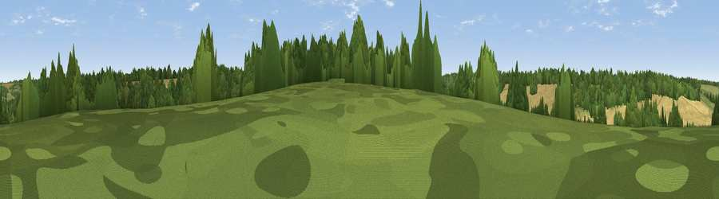

Viewpoint near Wootton
#44877 in England · top 94% of its area beats it · near Wootton · access?Where it is
The exact computed spot (TR 21475 46175). Click the marker for map links.
Public access: no public right of way or access land is recorded at this exact spot — it may be on private land. Computed from Natural England's CRoW access layer and OpenStreetMap rights of way — not the legal definitive map. Always verify locally.
The view, rendered

A 360° render of this exact spot computed from the terrain model, tree cover and land cover — summer colours, afternoon light, calibrated against photographs of famous viewpoints. Real trees, hedges and buildings will differ in detail.
The panorama
Grey silhouette: terrain skyline in each direction (720 bearings, Earth curvature and refraction included). Dashed green: skyline with trees (+15 m) and buildings (+8 m) as obstacles. Blue strip: how far the ground is visible on each bearing.
Where the view opens
Wedge length = distance to the farthest visible ground on that bearing (vegetation-aware). Rings at 10, 25 and 50 km.
What fills the view
42% cropland · 39% woodland · 19% grassland
Angular shares of the visible panorama (visual magnitude), not map area. Landscape diversity 0.46 (0–1 Shannon).
Key numbers
More beautiful places nearby
The staircase of upgrades: each row has a higher view potential than everything closer. Driving times are estimates from straight-line distance, calibrated against real road routing — check an actual route before setting out.
| Place | Direction | Drive | Score |
|---|---|---|---|
| Viewpoint near Wootton | SSW · 1 km | ~3 min | 17.1 |
| Viewpoint near Denton | WNW · 2 km | ~5 min | 20.4 |
| Viewpoint near Elham | W · 3 km | ~7 min | 28.0 |
| Viewpoint near Alkham | SSE · 6 km | ~13 min | 28.9 |
| Viewpoint near Temple Ewell | ESE · 7 km | ~14 min | 33.6 |
| Viewpoint near Etchinghill | SW · 7 km | ~15 min | 48.8 |
| Viewpoint near Old Hawkinge | S · 8 km | ~16 min | 76.9 |
| Viewpoint near Capel-le-Ferne | SSE · 9 km | ~17 min | 80.2 |
51.17191, 1.16687 · source: screening · position refined by local search. Computed location — check access rights before visiting.